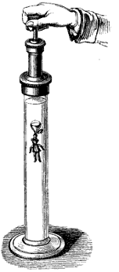
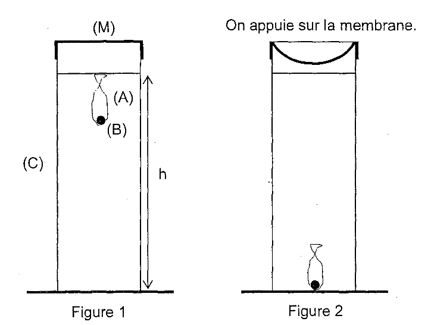
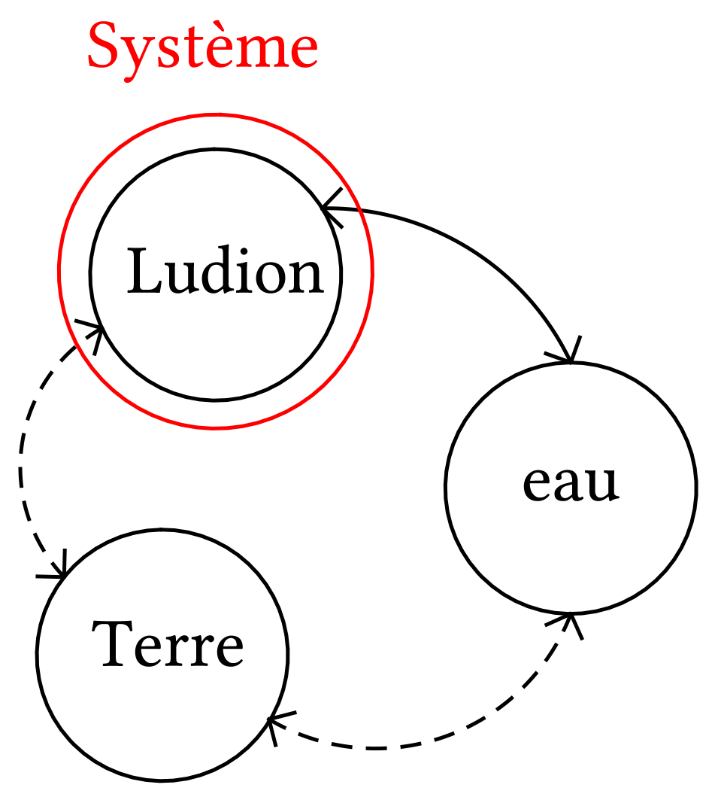
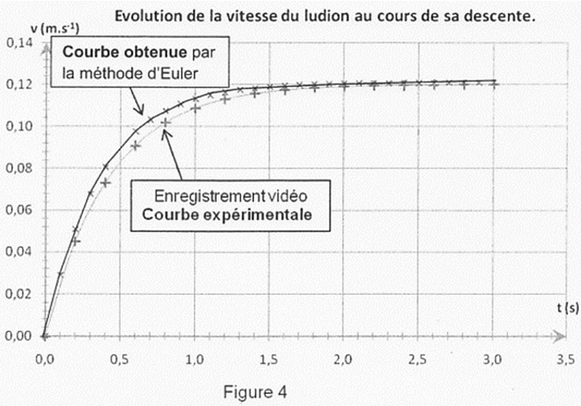

Le texte ci-dessous décrit le comportement d'un objet,
communément appelé « ludion », plongé
dans une colonne d'eau.
« Dans le liquide est une petite figure d'émail, soutenue
par une boule de verre creuse qui contient de l'air et de
l'eau… Cette boule est percée à sa partie
inférieure, d'une petite ouverture par laquelle l'eau peut
pénétrer ou sortir, selon que l'air intérieur de
la boule est plus ou moins comprimé… Si l'on exerce avec
la main une pression sur le piston comme le montre la figure, l'air
qui est au-dessous se trouve comprimé et transmet la pression
à l'eau du vase et à l'air qui est dans la boule…
»
Texte et illustration provenant de : A.GANOT, Traité de
Physique, Ed. Ganot 18070

1Principe de fonctionnement
Au laboratoire, le ludion peut être réalisé à
l'aide d'une bille () de
verre de volume , symbolisant
la figurine solide, placée dans un ballon de baudruche () fermé et
imperméable, renfermant de l'air de volume variable ; le ludion a donc un volume variable
tel que . Il est placé
dans une éprouvette cylindrique verticale (), remplie d'eau sur une hauteur  très supérieure aux dimensions du ludion et fermée
dans sa partie supérieure par une membrane souple
imperméable ().
Lorsque l'on n'appuie pas sur la membrane, le ludion est en
équilibre en un point voisin de la surface de l'eau
(figure 1). Lorsque l'on appuie sur la membrane (), on constate que le ludion tombe
au fond de l'éprouvette (figure 2).
très supérieure aux dimensions du ludion et fermée
dans sa partie supérieure par une membrane souple
imperméable ().
Lorsque l'on n'appuie pas sur la membrane, le ludion est en
équilibre en un point voisin de la surface de l'eau
(figure 1). Lorsque l'on appuie sur la membrane (), on constate que le ludion tombe
au fond de l'éprouvette (figure 2).
On se propose d'interpréter sommairement cette observation.

Données.
-
Masse du ludion (bille + ballon + air dans le ballon) : ;
-
Volume de la bille : ;
-
Masse volumique de l'eau : ;
-
Intensité de la pesanteur : ;
-
Équation d'état des gaz parfaits : . Dans cette équation , la pression du gaz, est en Pascal (Pa),
 , son volume, en
mètres cubes (),
, la quantité de
matière, en moles (mol), ,
la température, en Kelvin (K). est
la constante des gaz parfaits ()
;
, son volume, en
mètres cubes (),
, la quantité de
matière, en moles (mol), ,
la température, en Kelvin (K). est
la constante des gaz parfaits ()
;
-
La température est constante et égale à 298 K.
1.1Étude de l'équilibre
1)
Faire l'inventaire des forces s'exerçant sur le ludion lorsque
celui-ci est en équilibre.
Réponse

-
Le système interagit avec l'eau. On modélise cette
interaction par le poids ;
-
Le système interagit avec l'eau. On modélise cette
interaction par la poussée d'Archimède lorsque le système est immobile. Lorsque le
système est en mouvement, on ajoute une force de
frottement fluide à cette modélisation.
2)
Exprimer les différentes forces en fonction , ,
et .
3)
Soit le volume d'air enfermé dans le
ballon lorsque le ludion est en équilibre. Établir son
expression littérale en fonction de , et .
Réponse
Puisque le système est immobile, son
accélération est nulle. La deuxième loi de
Newton s'écrit donc
Le poids et la poussée d'Archimède sont donc deux
vecteurs colinéaires et de sens opposés. Les valeurs
sont donc telles que
Finalement
4)
Calculer la valeur du volume d'air .
1.2Mise en mouvement du ludion
L'eau est supposée incompressible. La compression de la membrane
augmente globalement la pression de l'eau sur l'air enfermé dans
le ludion.
5)
En considérant l'air comme un gaz parfait, indiquer
l'évolution du volume d'air contenu dans le ludion après
compression de la membrane.
Réponse
L'air dans le ludion est considéré comme un gaz
parfait donc :
Le volume du ludion diminue donc lorsque la pression qui s'exerce
sur lui augmente.
6)
Justifier alors que le ludion entame un mouvement vertical vers le
bas.
Réponse
Si le volume diminue, le volume diminue aussi puisque le volume
reste constant. La poussée d'Archimède diminue donc
aussi puisqu'elle est proportionnelle au volume . L'équilibre est rompu et le ludion
se déplace vers le bas.
2Étude du mouvement du ludion
Pour étudier le mouvement du ludion, on se place dans le
référentiel du laboratoire. On définit un axe
vertical dirigé vers le bas, le point
 coïncide avec le centre d'inertie du ludion
à l'instant de date (instant où le
ludion débute sa descente).
coïncide avec le centre d'inertie du ludion
à l'instant de date (instant où le
ludion débute sa descente).
On suppose que le ludion est soumis à une force de frottement
s'exprimant sous la forme  où
où  est le vecteur vitesse du centre d'inertie de la bille et
le coefficient de frottement ().
est le vecteur vitesse du centre d'inertie de la bille et
le coefficient de frottement ().
On néglige la variation de pression avec la profondeur et on
considère que la pression de l'eau sur l'air enfermé dans
le ludion est la même quelle que soit l'ordonnée du ludion afin que la valeur de la poussée
d'Archimède puisse être considérée constante.
Le volume d'air du ludion est désormais
et est supposé constant sur l'ensemble de la descente.
7)
Représenter, à l'aide d'un schéma, sans souci
d'échelle, mais de façon cohérente, les forces
s'exerçant sur le ludion en mouvement.
8)
En appliquant la deuxième loi de Newton dans le
référentiel du laboratoire, établir
l'équation différentielle du mouvement du ludion.
Réponse
On applique la deuxième loi de Newton
Une projection selon l'axe donne
ou
Puisque  (le ludion descend), on a ; l'équation différentielle
s'écrit
(le ludion descend), on a ; l'équation différentielle
s'écrit
9)
Montrer que l'équation précédente est de la forme
en donnant l'expression de
en fonction de , , et
.
Vérifier que
la constante en précisant son
unité.
Réponse
Par identification, on conclut que
A.N. et .
Partie Hors-Programme
On veut résoudre numériquement cette équation
différentielle par la méthode numérique la plus
simple : la méthode d'Euler.
Principe de la résolution par la méthode
d'Euler
-
À une date t donnée, on suppose que la
dérivée est constante
pendant un cours intervalle de temps
appelé « pas d'intégration ».
-
À partir de l'équation différentielle et des
conditions initiales à , on calcule la valeur de la
dérivée, puis la valeur de la vitesse  à la date
égale à .
C'est une approximation affine !
à la date
égale à .
C'est une approximation affine !
-
On recommence en considérant la date suivante, ; la valeur de constitue la
nouvelle condition initiale. Et ainsi de suite…
Le tableau suivant est un extrait d'une feuille de calcul des valeurs de
la vitesse () et de
l'accélération ()
du ludion en fonction du temps ().
Il correspond aux valeurs et
|
() |
() |
| 0,00 |
0,00 |
0,29 |
| 0,10 |
0,03 |
0,22 |
| 0,20 |
0,05 |
0,17 |
| 0,30 |
0,07 |
0,13 |
| 0,40 |
0,08 |
|
| 0,50 |
|
0,07 |
| 0,60 |
0,10 |
0,06 |
10)
Quelle est la valeur du pas d'itération
manifestement choisi ?
Réponse
Le pas d'itération est puisqu'on
passe d'une date à la suivante en ajoutant .
11)
Déterminer et
en détaillant les calculs.
On a représenté sur le même graphique (figure 4) les
courbes d'évolution de la vitesse du ludion au cours du temps
pendant sa descente obtenues, d'une part par pointage vidéo et
traitement informatique, d'autre part par la méthode d'Euler.
12)
Sans conclure sur la validité du modèle utilisé
pour la force de frottement, quel serait l'intérêt de
diminuer le pas d'itération utilisé par la
méthode d'Euler ?
Réponse
En diminuant le pas d'itération dans la méthode
d'Euler, on augmente la précision de la méthode ; la
courbe de la méthode d'Euler se rapprocherait alors de la
courbe expérimentale mais le nombre de lignes de calcul
augmenterait.
Attention : si on diminue trop le pas et qu'on
augmente le nombre de calcul, on augmente aussi l'erreur due
à l'arrondi.
13)
Déterminer l'expression de la vitesse limite en fonction de
et puis sa valeur.
Vérifier qu'elle est en accord avec l'expérience.

Réponse
En régime permanent la vitesse, notée
devient constante, donc et .
A.N.  .
Cette valeur est bien en accord avec celle que l'on peut lire sur le
graphe.
.
Cette valeur est bien en accord avec celle que l'on peut lire sur le
graphe.